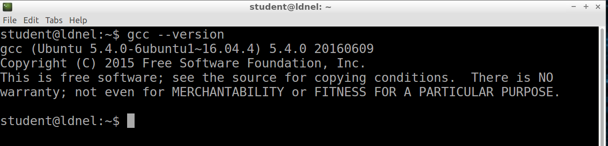
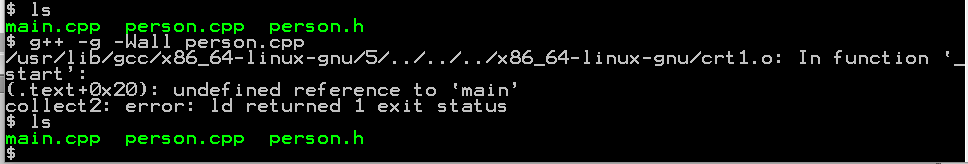

COMP 2404 Fall 2019
Tutorial 01: Hello GCC -Compiling with g++ Compiler
© L.D. Nel 2019
Revisions will be noted here
Description:
The purpose of this tutorial is to make sure you understand the basics of compiling c++ code with the g++ compiler using a linux bash command shell. To accomplish this we will repeat the exercise described in the Hello World example in the notes but make some modifications to the code and the compilation.
For this tutorial you will need to open a linux bash command shell in one of the linux images available to you (e.g. virtual box image, open stack image, an actual linux machine, or even the windows 10 subsystem for linux bash shell or a Mac with Xcode installed). Once open you can proceed with the exercise.
[Note on the HP4155 lab computers probably the virtual box image will be the easiest -openstack is still being tweaked by our tech support people this week.]
Preliminary:
To check that the compiler is installed and get its version execute:
gcc --version
my output looked like this:

Compiling "Hello World":
Open a text editor and create a file main.cpp with the following contents (You will learn more if you actually type the code rather than cutting and pasting.):
#include <iostream>
#include <string>
using namespace std;
int main(){
string namePrompt = "Enter name";
string exitPrompt = "Press ENTER to continue";
string input; //To hold user console input
cout << namePrompt << "\n";
getline(cin, input);
cout << "Hello " << input << "\n";
//keep console open until user types a key and enter
cout << exitPrompt;
getline(cin, input);
return 0; //0 means normal termination
}
When your are done you can display the contents of the file to your console with:
cat main.cpp
To compile this code execute
g++ -g -Wall main.cpp -o helloWorld
g++ invokes the c++ compiler (gcc on the other hand would invoke the c compiler - a common starting mistake) "-g" instructs the compiler to include debugging information, "-Wall" displays all warnings, "-o helloWord" request that the resulting executable be placed in a file named helloWorld instead of the default a.out. (Execute man gcc to learn more about the command attributes.)
If sucessful we can run the executable by executing
./helloWorld
Note that you need the "./" to tell the terminal shell to look for helloWorld in the current directory.
Here is my screen capture showning the pervious steps:
Start looking over the syntax and seeing how much you can understand or deduce. cout and cin are provided by the <iostream> built in library. They are objects that map to the console screen and keyboard input. Library <string> provides an object implementation of character strings. To start finding out what you can do with strings look at: http://www.cplusplus.com/reference/string/string/ See what you make of the getline() function and see what other things look useful.
Problem 1) Using Older C-Strings
In general we will want to use the more object-oriented approach to strings as demonstrated above. However, you will run into a lot of c++ code based on the older c-style strings. c-style strings are just arrays of characters (terminated with a null character). They are typically declared as
char * prompt = "Enter name";
char * prompt means prompt is a pointer to a char. That is, variable prompt will contain the memory address of the start of the array of characters.
Make another main2.cpp that looks like the following (Notice we are no longer including <string>.):
#include <iostream>
using namespace std;
int main(){
char * namePrompt = "Enter name";
char * exitPrompt = "Press ENTER to continue";
int MAX_LENGTH = 80;
char input[MAX_LENGTH];
cout << namePrompt << "\n";
cin.getline(input, MAX_LENGTH);
cout << "Hello " << input << "\n";
//keep console open until user types a key and enter
cout << exitPrompt;
cin.getline(input, MAX_LENGTH);
return 0; //0 means normal termination
}
What are all the differences you can spot between the two examples? Why would this code be considered less safe than the previous version?
Compile and run the code. You will likely get some warnings about const conversion. We will study that later in the course. Here is my session:
Problem 2 Creating Our first Class
Next we will extend the code slightly by creating our first object-oriented class representing a person. We will put this in its own file person.h rather than in our main.cpp file. Further the main.cpp file will include the person.h file so we will still only compile one file.
Using a text editor create the following person.h file with the following code that describes a class Person:
#include <iostream>
#include <string>
using namespace std;
class Person {
private:
string name;
string email_address;
string phone_number;
public:
Person(string aName, string anEmailAddress, string aPhoneNumber){
name = aName;
email_address = anEmailAddress;
phone_number = aPhoneNumber;
}
void printOn(ostream & out){
out << name
<< " email: "
<< email_address
<< " phone: "
<< phone_number;
}
};
Modify the main.cpp file to look as follows:
#include<iostream>
#include <string>
#include "person.h"
using namespace std;
int main(void){
string input;
cout << "Hello World\n";
Person lou("Lou", "ldnel@scs.carleton.ca", "613 520-2600 ex4335");
Person dan("Dan", "dan@hotmail.com", "613 555-1234");
lou.printOn(cout);
cout << "\n";
dan.printOn(cout);
//keep console open until user presses a key
cout << "\n\n" << "Press any key to continue";
getline(cin, input);
return 0;
}
Note a few "quirky" things:
-Notice I'm choosing to start my class name with a Captial letter (not required by the language).
-The class Person { ... }; construct ends in a semi-colon but the int main(){ ...} function does not. Remember that.
-The Person class void printOn(){...} method has a return type (void) but the constructor Person(){...} does not. Also notice function main() returns a seemingly meaningless int.
-The <iostream> and <string> libraries are included using <> but the person.h file is included using "".
-Notice part of the class is in a private: section and part of the class is in a public: section.
-Notice I used three words: method, constructor, and function when referring to function-like things. What is the distinction?
Compile this code with the following g++ command.
g++ -g -Wall main.cpp
(Notice we are still only compiling one file.) The screen capture below shows this sequence.
Start looking over the c++ code and see how much you can understand at this point.
Problem 3 Using .h and .cpp Files To Represent A Class
There is a structural problem with the code in the previous example. The .h file contains both type declaration statements and executable statements. (The statements inside a function, method, or constructor body are executable statements.)
The .h file is not meant to include executable code (function or method bodies) only type declarations. Lets organize this better.
Also all of the code is being compiled all at once. One advantage of c++ is to allow smaller units of compilation that can be linked together.
Break the person.h file into two files: person.h and person.cpp and split up the contents as shown. (Notice the new syntax: Person::Person(){...} and Person::printOn(){...})
//file: person.h
#include <iostream>
#include <string>
using namespace std;
class Person {
private:
string name;
string email_address;
string phone_number;
public:
Person(string aName, string anEmailAddress, string aPhoneNumber);
void printOn(ostream & out);
};
//file person.cpp
#include <iostream>
#include <string>
#include "person.h"
using namespace std;
Person::Person(string aName, string anEmailAddress, string aPhoneNumber){
name = aName;
email_address = anEmailAddress;
phone_number = aPhoneNumber;
}
void Person::printOn(ostream & out){
out << name
<< " email: "
<< email_address
<< " phone: "
<< phone_number;
}
Erase, or remove, all files except the main.cpp, person.h, and person.cpp.
This time compile the person.cpp file and see what happens:
g++ -g -Wall person.cpp

Notice no new file is created and there is some complaint about an undefined reference to "main", yet if you compile main.cpp
g++ -g -Wall main.cpp
Notice again no additional file gets created and there are some complaints about undefined references.
This time compile both source files as follows:
g++ -g -Wall person.cpp main.cpp
Notice this time an a.out file is created and when executed the program runs (a.out is created by default if you don't specify an executable with the -o option).
C++ compiles programs in two stages first it compiles the .cpp files into .o object files and then it links the .o object files into an executable file. We can see this by doing these steps individually.
First again delete all the files except the main.cpp, person.h, and person.cpp.
Then first just compile the person.cpp using the -c option (for compile only):
g++ -g -Wall -c person.cpp
Notice it generates a person.o object file
Next only compile the main.cpp file:
g++ -g -Wall -c main.cpp
Notice it generates a main.o object file.
Now link the object files by executing
g++ main.o person.o
This time it links the object files and generates the a.out executable that can be run. Here is a screen capture of the above:
Later in the course we will look at make files to assist with compiling and linking multiple source files.
When you have finished Problems 1,2 and 3 demonstrate your work to a tutorial TA to get credit for the tutorial.
Optional)
Based on what you did in the previous problem, add a C++ class to represent a class Pet with two string properties: name and type (intended to be "cat", "dog" etc.). Put your code in a pet.h and pet.cpp file.
Modify the main.cpp file to not only create and print two Person objects but also two Pet objects.
Compile and run the code and verify that it works. (Again don't worry about the constant to char * warnings at this point.)